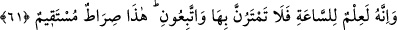

Malından fayda kazanır.
İkincisi; insân-ı kâmilden öyle mânevî evlâdlar/müridler doğar ki bunlar, meşrep ve
ahlâk bakımından melekler gibidirler. Hatta onlardan bile üstündürler. Çünkü insanın
istidâd ve kâbiliyeti, meleğin istidâdından daha kuvvetlidir. İşte bu mânevî evlâdlar, bu
kâmil insana silsile yoluyla kıyâmete kadar halîfe ve vekîl olurlar. İşte bu, mânevî
silsiledir. Tıpkı insanların nesil itibariyle nutfe yoluyla kıyâmete kadar devam etmesi
gibi. Bu ise sûrî silsiledir. Yine nasıl ki zâhir âlimi ehlinin ve neslinin devam etmesiyle
bâki sayılıyorsa, mânâ âlimi de öyledir; o da mürid ve cemâatinin devam etmesiyle
bâkidir.
61. Şüphesiz ki o (Îsâ), kıyâmetin (ne zaman kopacağının) bilgisidir. Kıyâmetin
geleceğinden hiç şüphe etmeyin ve bana uyun; çünkü bu, dosdoğru yoldur.
“Şüphesiz ki o,” Îsâ (a.s.) “kıyâmetin (ne zaman kopacağının) bilgisidir.” Âhir
zamanda yeryüzüne inişiyle onun yaklaştığını bildiren alâmetlerden bir alâmettir.
“Kıyâmetin geleceğinden hiç şüphe etmeyin ve bana” benim hidâyetime, şerîatıma
yahut elçime “uyun; çünkü bu” benim sizi dâvet ettiğim ittibâ ile hakka ulaştıran
“dosdoğru yoldur.”
Îsâ (a.s.)’a “ilim” denmesi, ilmin kendisiyle hâsıl olması sebebiyledir. Îsâ (a.s.)’ın
ilim vesilelerinden biri olması bakımından bu ifâde mübâlağa için kullanılmıştır. Îsâ
(a.s.)’ın babasız olarak dünyaya gelişinin, kıyâmetin kopuşuna yakın oluşuyla sanki o,
bizzat ilmin kendisiymiş gibi anlatılmıştır. Yahut Îsâ (a.s.)’ın ölüleri diriltmesi,
kıyâmette vukû bulacak hâdiseler içinde kâfirlerin en çok inkâr ettikleri “yeniden
dirilişin” doğruluğuna delildir.
Hadis-i şerifte şöyle buyrulmuştur: “Elbette Îsâ (a.s.) arz-ı mukaddesde Efîk denen
yere inecektir.”[179] Efîk kelimesi “emîr” kelimesi gibidir. Efîk, Havrân ile Gûr
arasında bir yerdir. Bu sırada Îsâ (a.s.)’ın üzerinde kırmızıyla boyanmış (kırmızı renkli)
iki elbise olacaktır. Zîrâ mısır” kırmızı çamur demektir. “Mumassar” kırmızıya
boyanmış demek olur. Kamus’ta’da böyledir.
Îsâ (a.s.)’ın başının saçı yağlanmış olup elinde bulunan mızrakla Deccâl’ı
öldürecektir. Beyt-i Makdis’e gelecektir. Bu sırada insanlar sabah yahut ikindi namazını
kılıyor olacaklardır. İmam, Îsâ (a.s.)’ın geldiğini fark edince kendisi geri çekilecektir.
Ancak Îsâ (a.s.) yine imamı takdim edip mihraba geçmesini isteyecek, kendisi de
imamın arkasında Muhammed (s.a.)’in şerîati üzere namaz kılacaktır. Sonra yeryüzünde
domuzu öldürecek, haç ve putu kırıp atacaktır. Havra ve kiliseleri tahrip edecek, o
sırada kendisine îman edenler dışında bütün hristiyanları öldürecektir.[180]